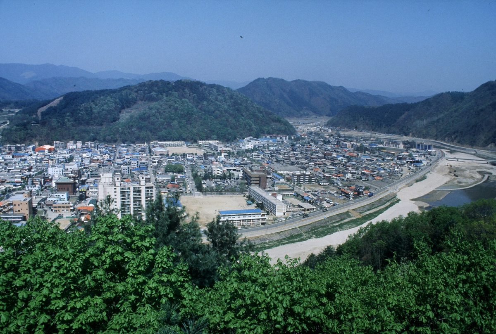

화천군, 파로호 수면·군부대 유휴부지 태양광 수익 나누는 화천형 햇빛연금 구상…군민 1인당 월 10만~15만 원 목표

김세훈 군수 취임 100일 인터뷰서 이르면 3~4년 안 지급 목표 밝혀…설비 용량·사업비·사업 주체는 아직 공개 안 돼, 농어촌 기본소득 월 15만 원과 합쳐 월평균 25만~30만 원 구상
강원 화천군이 파로호 수면과 군부대 유휴부지 등에 태양광 발전시설을 세워 그 수익을 군민에게 나누는 '화천형 햇빛연금'을 구상하고 있다. 김세훈 화천군수는 민선 9기 취임 100일을 맞아 가진 언론 인터뷰에서 이르면 3~4년 안에 군민 1인당 월 10만~15만 원을 지급하는 것을 목표로 준비하고 있다고 밝혔다. 다만 발전설비 용량과 사업비, 사업을 누가 맡을지, 수면 이용과 군부대 부지 협의를 어떻게 풀지는 아직 알려지지 않아, 햇빛연금은 준비 단계의 목표에 머물러 있다. 군은 민선 9기 제1호 공약인 농어촌 기본소득으로 8월 28일부터 군민 1인당 매월 15만 원을 지역화폐로 지급하고 있으며, 10월 7일 기준 지급액 87억7,700만 원 가운데 60억4,100만 원(68%)이 쓰였다. 김 군수는 기본소득과 햇빛연금이 계획대로 실현되면 군민 1인당 월평균 25만~30만 원의 소득 지원이 가능해진다고 내다봤고, 6월 이후 인구가 716명 늘어 2만3,028명이 됐다고 밝혔다. 군은 이와 함께 중대형 임대주택 700호 건설도 준비하고 있다.
시민에너지 관점
기본소득 월 15만 원에 햇빛연금 월 10만~15만 원을 더하겠다는 구상은, 지역의 햇빛과 물을 군민 모두의 소득으로 바꾸려는 시도라는 점에서 눈여겨볼 만하다. 군부대 협의와 수면 이용 허가, 수질·경관 문제로 실현이 쉽지 않다는 우려가 나올 수 있지만, 이미 놀고 있는 부지와 수면부터 단계적으로 쓰고 입지를 정하는 단계부터 주민과 함께 논의하면 갈등을 줄일 수 있다. 덴마크가 2009~2020년 새 풍력단지 지분 20%를 지역 주민에게 내놓도록 한 것처럼, 수익을 나눠 받는 데 그치지 않고 군민이 발전소의 주인이 될 때 햇빛연금은 군정 형편에 흔들리지 않고 오래 이어진다. 화천군은 설비 용량과 사업비를 담은 사업계획을 내놓을 때 군민이 출자하고 운영에 참여하는 방식부터 함께 밝혀야 한다.
출처: 강원도민일보 2026-10-24 심예섭 원문 보기
華川郡、破虜湖の水面・軍部隊の遊休地での太陽光収益を分ける「華川型ひなた年金」を構想…郡民1人当たり月10万〜15万ウォン目標
キム・セフン郡守が就任100日のインタビューで早ければ3〜4年以内の支給目標を表明…設備容量・事業費・事業主体はまだ公表されず、農漁村基本所得の月15万ウォンと合わせ月平均25万〜30万ウォンを構想
韓国江原道の華川郡が、破虜湖（パロホ）の水面や軍部隊の遊休地などに太陽光発電施設を設け、その収益を郡民に分ける「華川型ひなた年金（햇빛연금）」を構想している。キム・セフン華川郡守は、民選9期の就任100日を迎えて応じたメディアのインタビューで、早ければ3〜4年以内に郡民1人当たり月10万〜15万ウォンを支給することを目標に準備していると明らかにした。ただし発電設備の容量や事業費、誰が事業を担うのか、水面の利用や軍部隊の用地をめぐる協議をどう進めるのかはまだ明らかになっておらず、ひなた年金は準備段階の目標にとどまっている。郡は民選9期の第1号公約である農漁村基本所得として、8月28日から郡民1人当たり毎月15万ウォンを地域通貨で支給しており、10月7日時点で支給額87億7,700万ウォンのうち60億4,100万ウォン（68%）が使われた。キム郡守は、基本所得とひなた年金が計画どおり実現すれば郡民1人当たり月平均25万〜30万ウォンの所得支援が可能になると見通し、6月以降に人口が716人増えて2万3,028人になったと述べた。郡はこれとあわせて中・大型の賃貸住宅700戸の建設も準備している。
市民エネルギーの視点
月15万ウォンの基本所得に月10万〜15万ウォンのひなた年金を上乗せするという構想は、地域の日差しと水を郡民全員の所得に変えようとする試みとして注目に値する。軍部隊との協議や水面利用の許可、水質・景観の問題で実現は容易ではないとの懸念も出るだろうが、すでに使われていない用地と水面から段階的に活用し、立地を決める段階から住民と話し合えば対立は減らせる。デンマークが2009〜2020年に新しい風力発電所の持ち分20%を地域住民に提供するよう義務づけたように、収益の分配を受けるだけでなく郡民が発電所の持ち主になってこそ、ひなた年金は郡の財政事情に左右されず長く続く。華川郡は設備容量と事業費を盛り込んだ事業計画を示す際、郡民が出資し運営に参加する仕組みもあわせて明らかにすべきだ。
出典: 江原道民日報 2026-10-24 シム・イェソプ 原文を読む
华川郡构想"华川型阳光年金"分享破虏湖水面和军队闲置用地光伏收益…目标每位郡民每月10万至15万韩元
郡守Kim Se-hoon在就任100天采访中表示最快3至4年内发放…装机容量、项目费用和实施主体尚未公开，与每月15万韩元农渔村基本收入合计，设想月均25万至30万韩元
韩国江原道华川郡正在构想"华川型阳光年金"，即在破虏湖水面和军队闲置用地等处建设光伏发电设施，并把收益分给郡民。华川郡守Kim Se-hoon在民选第9届任期就任满100天之际接受媒体采访时表示，正以最快3至4年内向每位郡民每月发放10万至15万韩元为目标进行准备。不过，发电装机容量、项目费用、由谁实施，以及水面使用和军队用地协商如何推进等尚未公开，阳光年金仍停留在准备阶段的目标。该郡自8月28日起，以民选第9届第1号承诺农渔村基本收入的形式，每月向每位郡民发放15万韩元地方货币；截至10月7日，已发放的87亿7,700万韩元中有60亿4,100万韩元（68%）被使用。Kim Se-hoon预计，如果基本收入和阳光年金按计划实现，每位郡民每月平均可获得25万至30万韩元的收入支持，并表示6月以来人口增加716人，达到2万3,028人。该郡同时还在筹备建设700套中大型租赁住房。
市民能源视角
在每月15万韩元基本收入之外再加上每月10万至15万韩元阳光年金的构想，试图把当地的阳光和水变成全体郡民的收入，值得关注。外界可能担心与军队协商、水面使用许可以及水质和景观问题会让项目难以落地，但如果先从已经闲置的用地和水面分阶段利用，并从选址阶段就与居民共同商议，就能减少冲突。正如丹麦在2009至2020年要求新建风电场把20%的股份提供给当地居民，郡民不只是分享收益，而是成为发电站的主人，阳光年金才能不受郡财政状况左右、长久持续。华川郡在公布包含装机容量和项目费用的项目计划时，应同时说明郡民出资并参与运营的方式。
来源: 江原道民日报 2026-10-24 Shim Ye-seop 查看原文
Hwacheon County plans a sunlight pension sharing solar income from Paroho Lake and idle military land, aiming for 100,000 to 150,000 won a month per resident
County Governor Kim Se-hoon set a target of payments within three to four years at the earliest in a 100-day interview; capacity, cost and operator not yet disclosed, combined with the 150,000-won rural basic income the county envisions 250,000 to 300,000 won a month
Hwacheon County in Gangwon Province, South Korea, is planning a "Hwacheon-style sunlight pension" that would build solar power facilities on the surface of Paroho Lake and on idle military land and share the income with residents. In a media interview marking 100 days in office, County Governor Kim Se-hoon said the county is preparing with the goal of paying each resident 100,000 to 150,000 won a month within three to four years at the earliest. The generating capacity, project cost, who would run the project, and how use of the lake surface and talks over military land would be handled have not yet been made public, so the sunlight pension remains a target at the preparation stage. Since August 28 the county has paid every resident 150,000 won a month in local currency as a rural basic income, the first pledge of the current administration, and as of October 7, 6,041 million won of the 8,777 million won paid out (68%) had been spent. Kim said that if the basic income and the sunlight pension are realised as planned, residents could receive income support averaging 250,000 to 300,000 won a month, adding that the population has grown by 716 since June to 23,028. The county is also preparing to build 700 mid- to large-sized rental homes.
Citizen Energy View
Adding a sunlight pension of 100,000 to 150,000 won a month on top of a 150,000-won basic income is worth watching as an attempt to turn local sunshine and water into income for every resident. Some will worry that talks with the military, permits for using the lake surface, and water quality and landscape concerns will make it hard to deliver, but starting step by step with land and water that already sit idle, and deciding sites together with residents from the outset, can reduce conflict. Just as Denmark required new wind farms from 2009 to 2020 to offer 20% of their shares to local residents, the pension will last regardless of the county's finances only if residents become owners of the power plants rather than mere recipients of a share of the income. When Hwacheon publishes a project plan with capacity and cost, it should set out how residents can invest in and help run the plants.
Source: Kangwon Domin Ilbo 2026-10-24 Shim Ye-seop Read the original